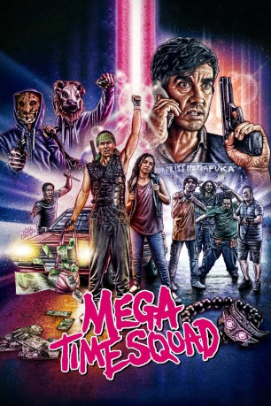

#10970 Mega Time Squad
 
 IMDB-Wertung: 5.7 / 10
IMDB-Wertung: 5.7 / 10  Metascore: 0
Metascore: 0 
Der Kleinkriminelle John (Anton Tennet) findet ein altes chinesisches Artefakt, welches über magische Kräfte verfügt. Dank dieses Gegenstandes kann John nun plötzlich durch die Zeit reisen, was er direkt nutzen will, um einen Raub zu begehen. Tatsächlich gelingt der Coup und John kann ein neues Leben beginnen. Doch wird er auch die nicht zu unterschätzenden Konsequenzen, die seine Zeitreise mit sich bringt, überleben?
Jahr: 2018
Dauer: 79 Minuten
FSK:
Land: Neuseeland Studio: Pandastorm PicturesTonspuren: DD5.1 - ,
Untertitel: Deutsch,
Auflösung: 1080p (1920x808) Größe: 6932 MB
Genre: Action, Sci-Fi, Komödie, Abenteuer, Krimi
Regisseur: Tim van Dammen
Drehbuch: Tim van Dammen
Soundtrack: Mike Newport
Darsteller:
- Morgan Albrecht als Shayna
 Yoson An als Wen
Yoson An als Wen- Jaya Beach-Robertson als Hootch
- Jonny Brugh als Shelton
- Milo Cawthorne als Damage
- Mick Innes als
- Ashley Jones als Taotie & Tour Guide
- Josh McKenzie als Trashinator
- Tian Tan als Wah Leee
- Anton Tennet als John
- Paul Trimmer als Markus
- Simon Ward als Jay
- Mohi Critchley als Sammy
- Hetty Gaskell-Hahn als Kelly
- Arlo Gibson als Gaz
- Lewis Roscoe als Worker On The Toilet
- Axl Scott als Gibbo
- Eru Wilton als Terry
Datei: X:\2018(G-M)\Mega Time Squad (2018, FSK, 1920x808).mkv seit 14.04.2019
Festplatte: HD 2018(G-Z)-2019(A-Z)
 Es gibt insgesamt 138 Filme in der Gruppe '2018(G-M)'
Es gibt insgesamt 138 Filme in der Gruppe '2018(G-M)'